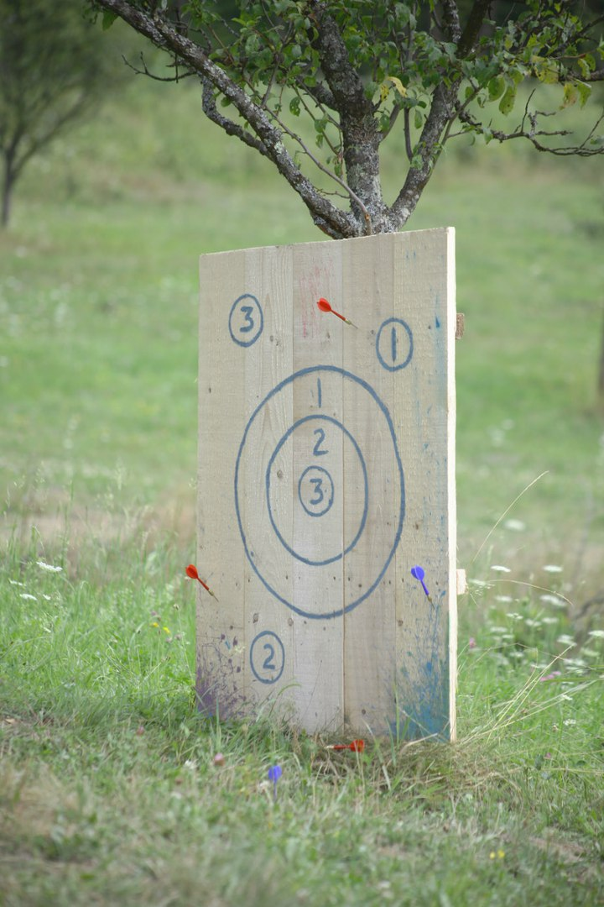

Інвентар: дротики для дартсу, дошка, маркер, повітр’яні кульки, фарба.
Тут можна включити фантазію і зробити мішень нестандартною і цікавою (як на фото). Або можна повісити шаріки з яскравою краскою, на кульці написати бал, якщо в кульку попали (і він лопнув), то учасник отримує стільки балів, скільки було написано на шаріку, + залишиться класний ефект від краски.
